Cooling need, extreme-weather events and the demand response
sense-energy build-weather-daily (table interim/weather_daily.parquet, see the
data dictionary), sense-energy cooling-analysis
(analysis/cooling.py, tables in code/reports/cooling/) and sense-energy weather-events
(analysis/weather_events.py, tables in code/reports/weather_events/); figures from
code/scripts/weather/ in code/reports/figures/weather/. 26 October 2026.
Everything is derived from the hourly ERA5 reanalysis already extracted at the 275 located sites (1 December 2022 – 31 May 2026); nothing new was downloaded. The half-hourly electricity record runs 7 December 2022 – 8 May 2026 (gas to 9 March 2025), so it covers three summers but not the record heat of late May 2026.
1. Cooling need
The integration-method cooling degree days (base 15.5 °C) of the median site were 197, 183 and
291 °C day over June–August 2023, 2024 and 2025; summer 2025 had 119 hours at or above 25 °C
against 46–50 in the two summers before (cooling_need_monthly). The hottest site-days in the
table are 25–26 May 2026 (34.2 °C at the hottest site; Kew observed a UK May record of 35.1 °C),
after the electricity record ends.
2. Electricity response to cooling need
Daily mean demand on non-holiday weekdays, regressed on HDD (15.5 °C) and CDD with a fixed effect
for every calendar month, so the slope comes from day-to-day weather within a month
(cooling_response_site, 95 % HAC intervals).
| Group | Sites | Median slope (% per °C day) | 10th – 90th percentile | Significantly > 0 | Demand-weighted |
|---|---|---|---|---|---|
| no on-site CHP | 107 | 0.8 | −1.7 – 3.9 | 51 | 1.4 |
| on-site CHP | 21 | 3.9 | 1.7 – 10.4 | 14 | 6.0 |
- Most sites barely respond to heat. Without CHP, a 30 °C day (about 8 °C day above 15.5 °C) adds about 6 % at the median site. General healthcare buildings respond most (median 3 % per °C day); mental-health and community sites hardly at all.
- CHP sites import much more on hot days, but not all of it is cooling. A heat-led CHP unit turns down when there is no heat demand, so grid import rises with temperature even if the building's demand does not. The two cannot be separated without CHP generation data; acute hospitals without CHP respond 1.4 – 2.3 % per °C day, acute hospitals with CHP 2 – 12 %.
- Base 15.5 °C fits best for 80 of 128 sites (AIC across 15.5, 18 and 22 °C): hospitals' high internal gains put their cooling balance point low. Daily maximum temperature and integrated CDD(15.5) track summer demand slightly better than humidity measures (enthalpy, wet bulb), but within-month weather explains under 10 % of summer weekday variance at the median site.
3. Extreme-weather events
| Type | Definition (site-day, then runs) | National events | Site events |
|---|---|---|---|
| heatwave | Met Office: ≥ 3 days with T_max ≥ county threshold (25 – 28 °C) | 8 (7 in the electricity record) | 907 |
| cold spell | UKHSA cold-alert criterion: daily mean ≤ 2 °C for ≥ 2 days | 14 | 3,263 |
| snow | ≥ 5 mm water equivalent in a day | 8 | 498 |
| heavy rain | ≥ 25 mm in a day | 19 | 1,069 |
| high wind | daily max gust ≥ 22 m/s (about 50 mph) | 37 | 5,378 |
A national event is a run of dates on which at least 5 % of sites are in a site event of that type
(one-day gaps bridged). The 28 °C counties (London, Surrey, Berkshire, Buckinghamshire,
Bedfordshire, Hertfordshire, Cambridgeshire) and East Riding (26 °C) follow the Met Office 2022
list; other counties take a regional approximation (site_thresholds.csv). Lowering every
threshold by 1 °C for ERA5's warm-tail bias raises the heatwave site events from 907 to 1,445 but
leaves the national count at 8 (weather_event_timeline).
The catalogue recovers the named storms (Otto, Noa, Ciarán, Debi, Pia, Gerrit, Henk, Isha, Jocelyn, Kathleen, Bert, Darragh, Éowyn, Amy), Storm Babet's rain on 20 October 2023, the four England heatwaves of summer 2025 and the cold spells of December 2022, January 2024 and January 2025.
Demand on event days (median over affected site-days, against the same weekday one and two
weeks either side; weather_event_demand): cold spells +4 to +12 % (median +7 %), snow +5 to
+8 %, heatwaves +3 to +6 % (median +4 %), heavy rain +0 to +5 %, high wind −6 to +6 % (the low
points are the Christmas-week storms, where the holiday dip dominates).
4. Nonlinear temperature response
sense-energy weather-response (analysis/weather_response.py, tables in
code/reports/weather_response/; pyfixest). Log daily demand on 2 °C bins of daily mean temperature
(reference 14 – 16 °C) with site × year-month and site × weekday fixed effects, bank holiday,
Christmas-week and school-summer controls; 95 % intervals clustered by ISO week. Each bin answers "how
much more does this site use on a day this warm or cold than on a 15 °C day in the same month".
140,326 site-days, 132 sites, December 2022 – May 2026.
| Daily mean | inpatient (43) | outpatient (66) | on-site CHP (23) |
|---|---|---|---|
| < −2 °C | +24.8 % [21.3, 28.4] | +31.5 % [27.8, 35.3] | −0.2 % [−8.5, 8.9] |
| 0 – 2 °C | +15.9 % | +21.0 % | +0.5 % |
| 8 – 10 °C | +6.1 % | +7.6 % | −3.3 % |
| 14 – 16 °C | 0 (reference) | 0 | 0 |
| 20 – 22 °C | +2.6 % | +4.6 % | +29.5 % |
| 22 – 24 °C | +6.3 % [4.7, 7.9] | +7.2 % [5.6, 8.8] | +26.6 % |
| ≥ 24 °C | +10.0 % [6.5, 13.6] | +14.8 % [9.7, 20.2] | +32.3 % [11.7, 56.8] |
(temperature_response_curve)
- A hockey stick, not a line. Demand is flat between 14 and 20 °C. Below that it rises almost linearly, about 1.5 – 2 % per degree. Above 20 °C it rises convexly: +2.6 % at 20 – 22 °C, +6.3 % at 22 – 24 °C, +10 % above 24 °C. A linear temperature term or a single cooling-degree-day slope understates the hot tail. Cold days still move demand more than hot days do: −2 °C costs 2.5 × as much as +24 °C.
- The daily peak behaves like the mean on the cold side; on the hot side outpatient peaks rise faster (+17 % at ≥ 24 °C).
- Hot days shift demand into the evening (
temperature_response_hourly, inpatient). On ≥ 24 °C days, inpatient demand at 19:00 is +23 %, at 11:00 – 12:00 roughly −2 %, and on 22 – 24 °C days the midday hours are −8 to −9 %. Days below −2 °C lift every hour by a similar 22 – 29 %. The midday dip remains at the 39 inpatient sites with no solar in ERIC 2023/24, so it is daylight (lighting) or unreported generation, not reported PV. The evening shift lands on the 17:00 – 20:00 system peak. - Persistence (
weather_persistence): beyond its own temperature, the 2nd hot day adds +2.1 % [0.3, 4.1] and the 3rd and later +2.6 % [0.6, 4.7] at inpatient sites (buildings heat up), nothing at outpatient sites. Long cold spells add +2.5 – 3.0 % from the 3rd day. - Other weather, on top of the bins: wind on cold days +0.4 % per m/s (infiltration and heat loss), solar irradiation −1.0 to −1.6 % per kWh/m² (daylight), dew point on warm days ≈ 0: humidity adds nothing beyond temperature.
- Extreme heat, on the daily maximum (
temperature_response_tmax; bands on the daily maximum to 30 – 32 °C and ≥ 32 °C, reference 18 – 20 °C). Demand is flat up to a 24 °C maximum, then rises by a growing step per band: inpatient sites +1.1 % (24 – 26 °C), +2.8 % (26 – 28), +5.3 % (28 – 30), +7.6 % (30 – 32) and +14.2 % [9.9, 18.6] at 32 °C and above; outpatient sites +10.1 % and +17.8 %. The daily peak rises more at the hottest sites, +27 % at outpatient sites on ≥ 32 °C days. The two hottest bands rest on 132 and 16 inpatient site-days (11 and 4 dates, all in 2023 – 2025), so the ≥ 32 °C step is an order of magnitude, not a precise number; the record heat of June 2026 lies beyond the electricity record. - CHP sites are the mirror image. Flat on the cold side (the CHP covers the extra heating electricity while it runs for heat), +27 – 32 % on warm days (it turns down), and +10 – 13 % more on the 2nd and 3rd hot day. This is import, not demand; see section 2.
5. Quasi-experimental estimates
sense-energy weather-causal (analysis/weather_causal.py, tables in code/reports/weather_causal/;
pyfixest). Weather is assigned by nature: hospitals do not choose their weather, and within a site
and a calendar month, which days are hot or cold is as good as random. What is not random is how
much heat or cold each site is exposed to overall (southern and urban sites run warmer and are
more often acute hospitals); every design below absorbs that with site-level fixed effects and
they differ in which time-varying confounders they rule out. Two doses, the two arms of the
hockey stick: degrees of daily mean below 14 °C (cold) and above 20 °C (heat). Sites without CHP
unless stated; 95 % intervals two-way clustered by site and date.
5.1 Nested fixed effects (causal_specs)
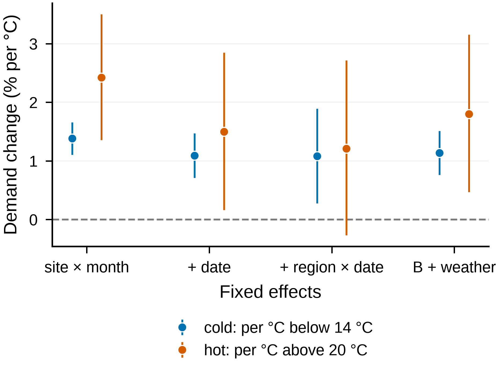
causal_specs PDF| Specification | Cold, % per °C | within-SD (°C) | Heat, % per °C | within-SD (°C) |
|---|---|---|---|---|
| A: site × month, site × weekday, calendar | +1.38 [1.11, 1.66] | 2.22 | +2.42 [1.36, 3.50] | 0.32 |
| B: A + date effects | +1.09 [0.71, 1.47] | 0.55 | +1.50 [0.16, 2.85] | 0.19 |
| C: A + region × date effects | +1.08 [0.28, 1.89] | 0.31 | +1.21 [−0.27, 2.72] | 0.13 |
| D: B + sunshine, wind, rain | +1.14 [0.76, 1.51] | 0.55 | +1.80 [0.47, 3.16] | 0.19 |
Date effects remove everything common to all sites on a day (bank holidays, strikes, school terms, the grid, the news): what remains is how much warmer or colder one site was than the others on the same day, relative to its own month. That is a difference-in-differences with a continuous dose. The within-SD column is the dose variation left to identify the effect: date effects remove 94 % of it, because the panel is one weather system (section 5.5). The cold effect is unchanged by them; the heat effect halves and loses precision, then recovers once the day's sunshine is held fixed (hot days are sunny, and sunshine lowers lighting demand).
The binned curves of section 4 re-estimated under B and D (causal_response_mean,
causal_response_tmax) keep their shape and shrink by about a third at both ends: on the daily
mean, below −2 °C +28 % (A) → +18 % (B) → +19 % (D), at ≥ 24 °C +12.6 → +7.9 → +10.6 %; on the daily
maximum, ≥ 32 °C +16.5 → +9.3 → +12.7 %. A confounder would bend one end of the curve; a noisier
thermometer scales the whole of it, which is what the date effects do.
5.2 Stacked event-study difference-in-differences (causal_event_study)
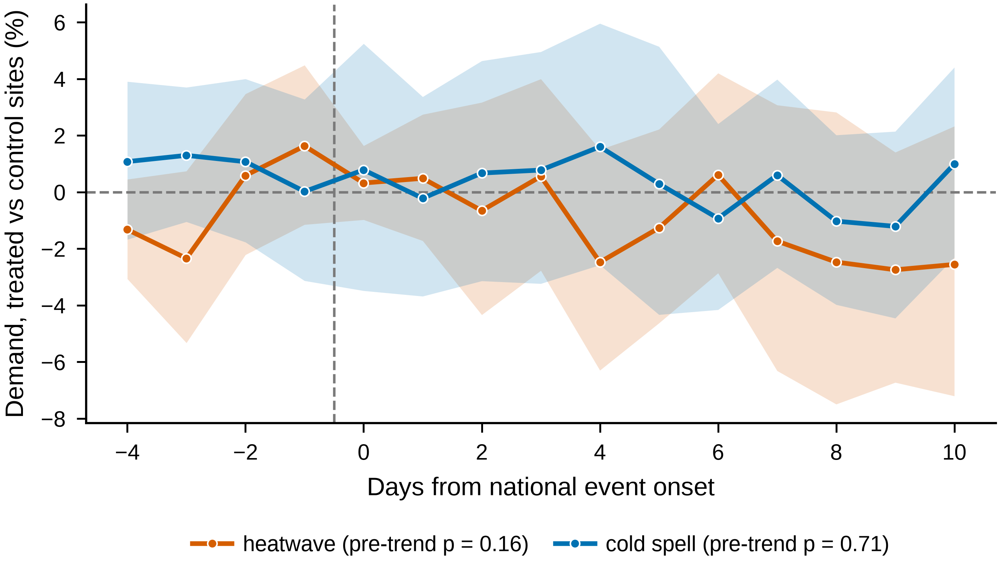
causal_event_study PDFFor each national heatwave or cold spell, sites inside a site-level event against clean
controls with no such event within ±10 days; stack-specific site and date effects; reference
k ≤ −5; events with another onset in their pre-period, or fewer than five treated or control
sites, are dropped (stack_log.csv: the cold spells of January 2023 and January 2026 hit nearly
every site and have no clean controls).
| Event | Stacks | Treated / control sites | Temperature ATT | Demand ATT | % per °C (SE) | Pre-trend p |
|---|---|---|---|---|---|---|
| heatwave | 6 | 85 / 102 | +1.12 °C | +0.1 % [−2.6, +2.8] | +0.1 (1.2) | 0.16 |
| cold spell | 7 | 102 / 81 | −1.19 °C | +1.6 % [−2.2, +5.4] | +1.3 (1.6) per °C colder | 0.71 |
Pre-event coefficients are flat (no anticipation), the post-event ones return to zero (no rebound: heatwave −2.1 % [−5.6, +1.3], cold −0.6 %). The design's weakness is its dose: during a national event the clean controls are still hot or cold, only 1.1 – 1.2 °C less so, so the expected demand gap (1.5 – 2 %) sits inside intervals 3 – 5 times wider than the fixed-effect estimates'. The point estimates agree with section 5.1; the event study adds the parallel-trends evidence, not precision. For CHP sites the heatwave ATT is −7.8 % [−24, +13]: no power.
5.3 Falsification (causal_lags, causal_randomisation)
- Randomisation inference. Reassigning whole daily weather series between sites at random, 200 times, specification B gives a cold effect as large as the observed one 0 times in 200 (permutation SD 0.22 % per °C against 1.09 observed) and a heat effect as large 6 times in 200 (p = 0.03).
- Leads. Tomorrow's and the next day's temperature, given today's and the past week's, are jointly significant (p = 0.022), driven by tomorrow's heat (+0.45 % per °C [−0.15, +1.04]); the cold leads are nil and the two-day lead is zero. Controlling for the same evening's temperature does not remove it (p = 0.052; the lead stays +0.53), so it is not the daily mean blurring the evening. Two readings remain: anticipation (heat-health alerts go out one to two days ahead and estates teams run cooling early) or measurement error in a site's ERA5 temperature, which lets adjacent days proxy for the true value. The lead is under half the same-day effect either way.
- Lags. The effect of a degree is largest the same day (cold +1.03, heat +1.11 % per °C), carries into the next day (+0.31, +0.60) and is nil after that; cumulative over a week, cold +1.41 [0.57, 2.26] and heat +1.82 [−0.33, 4.02] % per °C-day, with no systematic rebound.
5.4 Extreme days (temperature_response_tmax, causal_extreme)
Indicators for a daily maximum of 28 – 30 and 30+ °C on top of the linear heat dose (323 site-days at 30+ °C). With date effects, a 30+ °C day carries −1.5 % [−4.3, +1.3] beyond what its mean temperature implies (28 – 30 °C: −1.0 %); without them −3.8 % [−6.7, −0.9]. There is no extra kick on the hottest days: demand keeps rising with temperature through 30 °C (section 4) at about 1.2 % per °C of daily maximum, and if anything falls short of a linear extrapolation in the daily mean, which is what cooling plant running at its limit would look like. The daily peak rises more than the mean on such days (+12 % inpatient, +27 % outpatient at ≥ 32 °C).
5.5 Space (causal_spatial)
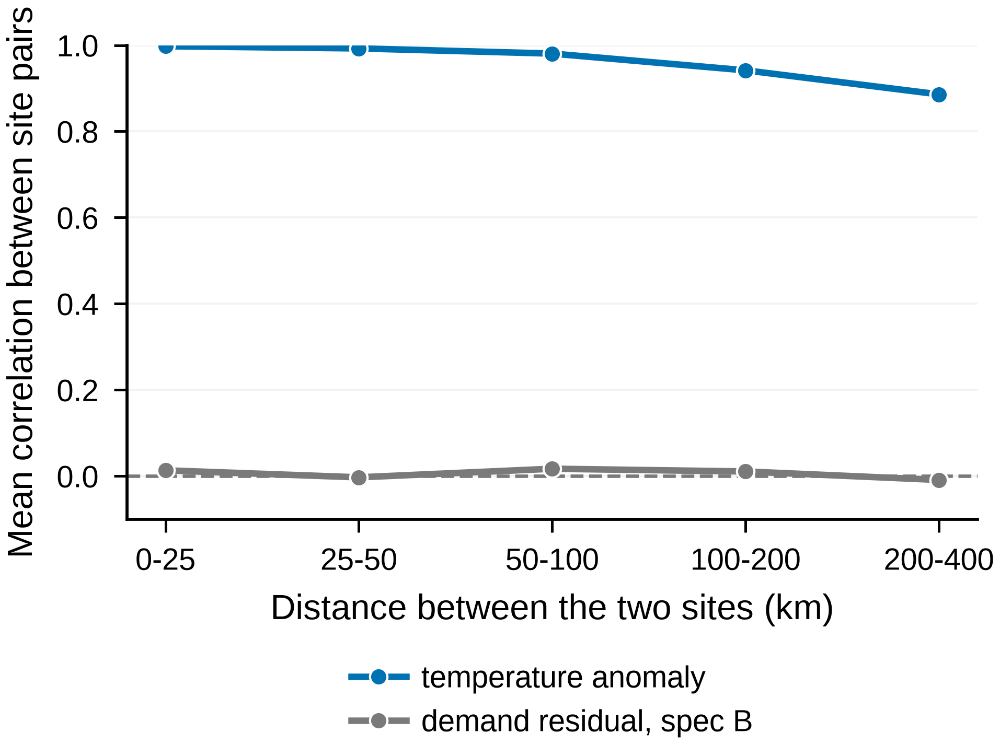
causal_spatial PDF- One weather system. Day-to-day temperature anomalies correlate 0.998 between sites within 25 km, 0.98 at 50 – 100 km, 0.94 at 100 – 200 km and 0.89 at 200 – 400 km. Specification B's residuals correlate 0.01 or less at every distance: after date effects there are no regional demand shocks left to confound, and nothing for region × date effects to remove.
- Neighbour placebo. The mean dose of the sites 30 – 150 km away (median 99 neighbours), given the site's own: for cold it does nothing (own +1.03 [0.43, 1.63], neighbours +0.36 [−0.19, +0.92]); for heat the two are too collinear to split (own +0.73 [−0.70, 2.17], neighbours +2.13 [0.81, 3.48]; with date effects +2.29 [−0.07, 4.70]) and only their sum, about 2.8 % per °C of a regionally hot day, is well determined. On the neighbourhood dose alone, heat is +2.85 [1.75, 3.97] (A) and +3.03 [0.83, 5.29] (B) % per °C, cold +1.39 in both. Section 6 tests whether this is the thermometer: it is not. A regional channel is the remaining reading – heat-health alerts are issued by region, and a site in an alerted region may run its cooling harder whatever its own reading says – and the UKHSA alert record would test it.
- Inference. Specification B standard errors: site and date two-way 0.19 (cold) and 0.67 (heat) % per °C; region × week 0.08 and 0.32; ICB (20 clusters) 0.15 and 0.77. Clustering by region × week ignores the same-day correlation across regions that the date dimension captures, so the two-way clustering is the conservative choice and ICB clusters agree with it.
- Effect modification (
heterogeneity.csv): older buildings, larger sites and warmer local climates do not change the slopes detectably (interactions −0.3 to +1.3 % per °C, p ≥ 0.16).
Reading. A degree of cold below 14 °C adds 1.1 – 1.4 % to a site's daily electricity, a degree of heat above 20 °C 1.5 – 2 % (2.8 – 3 % per degree of a regionally hot day). Both survive the removal of every national and regional day shock, randomisation of weather across sites and pre-trend tests, and section 6 shows the heat figure is not an artefact of the 25 km grid.
6. Which thermometer? ERA5, ERA5-Land and the Met Office stations
sense-energy fetch-isd, build-isd (data/isd.py: NOAA's Integrated Surface Database, the Met
Office synoptic and airfield observations, open data, 76 stations, hourly, to 24 August 2025),
ERA5-Land (fetch-weather --config code/configs/weather_era5_land.yaml: 0.1°, land points only)
and sense-energy thermometers (analysis/thermometers.py, tables in code/reports/thermometers/).
Each site takes the nearest reporting station among the three within 60 km (median 13.5 km).
Everything is re-estimated on the 106,425 site-days all three thermometers cover, so the
estimates differ only by the thermometer.
| ERA5, 25 km grid point | ERA5-Land, 9 km land point | Met Office station, median 13.5 km | |
|---|---|---|---|
| Agreement with the station: daily mean / maximum RMSE, bias | 0.62 / 0.94 °C, +0.07 | 0.72 / 1.26 °C, −0.12 | – |
| Anomaly correlation, anomaly RMSE | 0.989, 0.44 °C | 0.980, 0.56 °C | – |
| Cold, % per °C below 14 (B / D) | +1.07 / +1.11 | +1.02 / +1.06 | +1.08 / +1.09 |
| Heat, % per °C above 20 (B / D) | +1.68 / +1.97 [0.63, 3.31] | +1.97 / +2.31 [1.08, 3.56] | +1.41 / +1.69 [0.51, 2.88] |
| Heat on the neighbourhood dose alone (B) | +3.47 | +3.36 | +2.81 |
| 30+ °C day beyond the dose (B) | −1.6 [−4.7, +1.6] | +0.9 [−3.2, +5.2] | +0.3 [−3.0, +3.6] |
| Leads, joint p | 0.031 | < 0.001 | 0.114 |
(thermometer_agreement, thermometer_effects, thermometer_response; maps
map_thermometer_network, map_thermometer_error_era5 / _era5_land, map_hot_day_bias,
map_heatwave_exposure.)
The error is coastal. On the map, ERA5's worst sites against the stations (anomaly RMSE 0.8 – 1.3 °C against a median of 0.44) line the Norfolk, Suffolk and south coasts and Torbay – where a 25 km cell straddles sea – and its hot-day cold bias follows the same coast (median −0.9 °C, to −4 °C at the coastal sites; 221 sites with 10 or more station days at 28 °C+). Inland, the Midlands and London, the grid point is as good as the station.
The heat is unevenly spread. By the station thermometer the hottest day of summer 2025 ranged from 27.9 °C on the Pennine and coastal sites to 33.6 °C in London, with a median of three days at 30 °C+ and up to nine: the cross-site spread that the date-effect designs identify from is a 5 – 6 °C band across England on the same days.
The grid was not hiding the heat effect. A station 13 km from the site, independent of any reanalysis, agrees with ERA5 on the day-to-day anomalies that identify the effects to 0.44 °C and gives the same slopes: cold identical on all three thermometers, heat 1.7 – 2.3 % per °C with every estimate inside the others' intervals. The attenuation reading of section 5 (that the 25 km grid understated heat) is not supported; the date effects shrink the curve because they remove 94 % of the variation, not because the thermometer is bad.
Finer is not better. ERA5-Land's 9 km land-only tiles agree with the stations less well than ERA5's 25 km cells (anomaly RMSE 0.56 against 0.44 °C, daily-maximum RMSE 1.26 against 0.94 °C): at coastal and estuary sites the land tile loses the sea's moderation that the coarser cell and the station both see. Its leads test fails outright (p < 0.001), the mark of a thermometer whose error is proxied by adjacent days. ERA5 stays the primary thermometer; the stations are the independent check.
The regional average still predicts better than any local reading, with all three thermometers, so that is not a measurement effect: it is a regional channel (heat-health alerts are issued by region) or collinearity, and the sum of the local and regional doses, about 2.8 % per °C, is what the data pin down.
The lead halves with the station thermometer (joint p 0.11), so part of it was grid error proxied by adjacent days; what remains is small and compatible with anticipation.
Where ERA5 is weakest is the hottest days: on the stations' 30+ °C days it reads 1.3 °C too cool. The 30+ °C indicator is within noise of zero on all three thermometers – still no extra demand beyond the temperature.
7. Who responds: heterogeneity of the slopes
sense-energy weather-heterogeneity (analysis/weather_heterogeneity.py, tables in
code/reports/weather_heterogeneity/). Sites without CHP, specification B (site × month,
site × weekday and date effects), so every national day shock is removed before any
between-site comparison.
7.1 Every site's slope (site_slopes_hdd14, site_slopes_cdd20, slope_spread, maps)
Dose × site interactions in one regression give 107 cold and 106 heat slopes with standard errors; a random-effects decomposition (DerSimonian–Laird) separates the true between-site spread (τ) from sampling noise, and empirical-Bayes shrinkage gives each site a posterior slope. The standard errors of the site slopes are Driscoll–Kraay (14-day lag); see the correction below.
| Cold, % per °C below 14 | Heat, % per °C above 20 | |
|---|---|---|
| Pooled slope | +0.86 | +1.38 |
| True between-site SD (τ) | 1.06 | 2.89 |
| Share of observed variance that is real (I²) | 0.97 | 0.94 |
| Posterior, 10th / 50th / 90th percentile | −0.2 / +0.7 / +2.9 | −3.0 / +0.8 / +5.4 |
| Sites significantly above / below zero | 69 / 4 | 43 / 26 |
- The average hides the sites. Both slopes vary far more between sites than their standard errors can explain (I² = 0.97 and 0.94). The heat slope runs from about −3 to +5 % per °C across the middle 80 % of sites, with 26 sites that significantly fall on hot days against 43 that rise. "The heat effect" is an average over sites that differ in sign. The cold and heat slopes of a site are only weakly related (correlation 0.23).
- Correction (9 November 2026). The first version of this section clustered the site slopes' standard errors by site and date. For a coefficient that belongs to one site that variance is wrong: the site cluster contributes nothing (the site's score sums to zero) and the date and intersection terms cancel, so the errors came out below even heteroskedasticity-robust ones. The slopes now carry Driscoll–Kraay errors (scores summed by date, Newey–West kernel over 14 days; a per-site Newey–West variance gives the same), 1.7 times the old errors for cold, 2.0 times for heat and 3.2 times for sunshine. The heterogeneity is real either way; it is smaller (I² 0.94–0.97 rather than 0.99) and fewer sites are individually significant (heat: 43 rising and 26 falling, was 48 and 39; cold: 69 and 4, was 82 and 8). Pooled estimates, the moderator regressions and every result clustered on shared coefficients are unchanged.
7.2 Moderators (moderators)
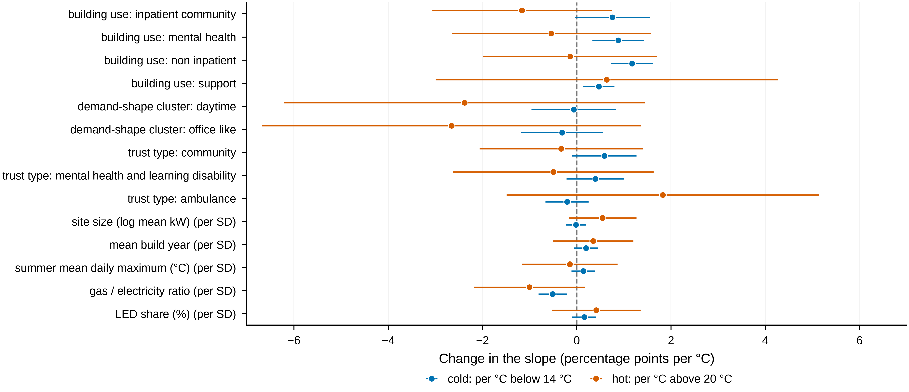
moderators PDFEach moderator enters as dose × moderator interactions on top of the main doses, one at a time (categorical levels against a reference, continuous per SD) and jointly on the 87 sites with every descriptor.
| Moderator | Cold slope | Heat slope | Joint p |
|---|---|---|---|
| Building use (vs acute inpatient) | community inpatient +0.8, mental health +0.9, non-inpatient +1.2, support +0.5 points | all within ±1.2, none significant | < 0.001 |
| Gas / electricity ratio (per SD) | −0.51 [−0.81, −0.21] | −1.0 [−2.2, +0.2] | 0.001 |
| Trust type | community +0.6 (p 0.09) | – | 0.041 |
| Demand-shape cluster | – | – | 0.61 |
| Site size (log kW) | – | +0.55 (p 0.14) | 0.26 |
| Mean build year, summer climate, LED share | – | – | 0.27 – 0.44 |
In the joint model (p < 0.001) building use and the gas ratio survive together: acute inpatient hospitals respond to cold with +0.05 % per °C, every other use with +1.2 to +1.4 points more, and a one-SD higher gas-to-electricity ratio removes 0.45 points.
- Cold has structure, and it is the heating fuel. The more a site heats with gas, the less its electricity responds to cold; the acute hospitals, which have the largest gas plant, barely respond at all. Cold raises electricity where heat is electric – non-inpatient buildings, mental-health units, community hospitals. That is the physically sensible answer, and the practical one for electrification: a site that moves from gas to heat pumps will acquire a cold slope of the order of +1 to +1.5 % per °C.
- Heat has no explained structure. Not one of the eight moderators predicts the heat slope, jointly or alone. The large real dispersion (τ = 3.9 points) is driven by something ERIC does not record – most plausibly whether a site has cooling plant at all, and how it is controlled. That is the strongest argument yet for asking trusts for cooling and CHP plant data.
- Trust type matters (p = 0.04) only as a proxy for building use.
7.3 Hour of day by building use (hourly_by_use_cold, hourly_by_use_hot)
Hourly curves for days below 2 °C and at or above 22 °C daily mean against a 14–16 °C day, by building use, with site × month and site × weekday effects (date effects would leave the hot band resting on a handful of site-days in the small groups; groups with fewer than 150 site-days in a band are left out).
- Cold days lift non-inpatient (+22 to +29 %), mental-health (+19 to +25 %) and community inpatient (+15 to +29 %) sites through the whole day, strongest in the morning and afternoon; the five acute hospitals rise only 6 to 8 %, flat across the day – gas carries their heating.
- Hot days at mental-health and non-inpatient sites (the two groups with enough hot site-days) are flat until midday and then climb to +12 to +15 % at 17:00–19:00 – the evening shift of section 4, now visible group by group, and landing on the system peak.
8. What moves heat
sense-energy heat-drivers (analysis/heat_drivers.py, tables in code/reports/heat_drivers/,
figures heat_*, sunshine_slopes, map_heat_types). Section 7 left the heat slope unexplained:
a real spread of ±3 points around +1.4 % per °C, 26 sites falling on hot days, and none of the
estates descriptors predicting any of it. This section takes the slope apart on the same panel
(sites without CHP, specification B; site-specific slopes with Driscoll–Kraay standard errors), with three
additions: a site-specific sunshine term, the demand of each six-hour block of the day
and the weekend, and the heat dose split into hot afternoons and warm nights. Two new
open datasets feed the moderators: the ONS rural-urban classification and Census 2021 population
density of every site postcode (data/site_context.py, via postcodes.io and Nomis), and the DESNZ
Renewable Energy Planning Database for solar schemes at the site postcode. The estates return
contributes two fields not used before: overheating occurrences in clinical areas (S16_07) and
solar consumed on site.
Sample. 24 of the 107 sites carry the meter_gaps coverage flag (a meter set that comes and
goes within the year); they are left out here, because meters that drop in and out within a
month put swings into exactly the variation the site slopes are estimated from, and they
turned out to own the tails of section 7: of the 24, Bridlington's heat slope was −15 % per °C
and two sites' +12 %, with monthly demand swinging threefold. 83 sites remain
(excluded_sites.csv lists the rest with their section-7 slopes).
8.1 Sunshine (heat_sunshine_control, sunshine_slopes, heat_blocks_sunshine)
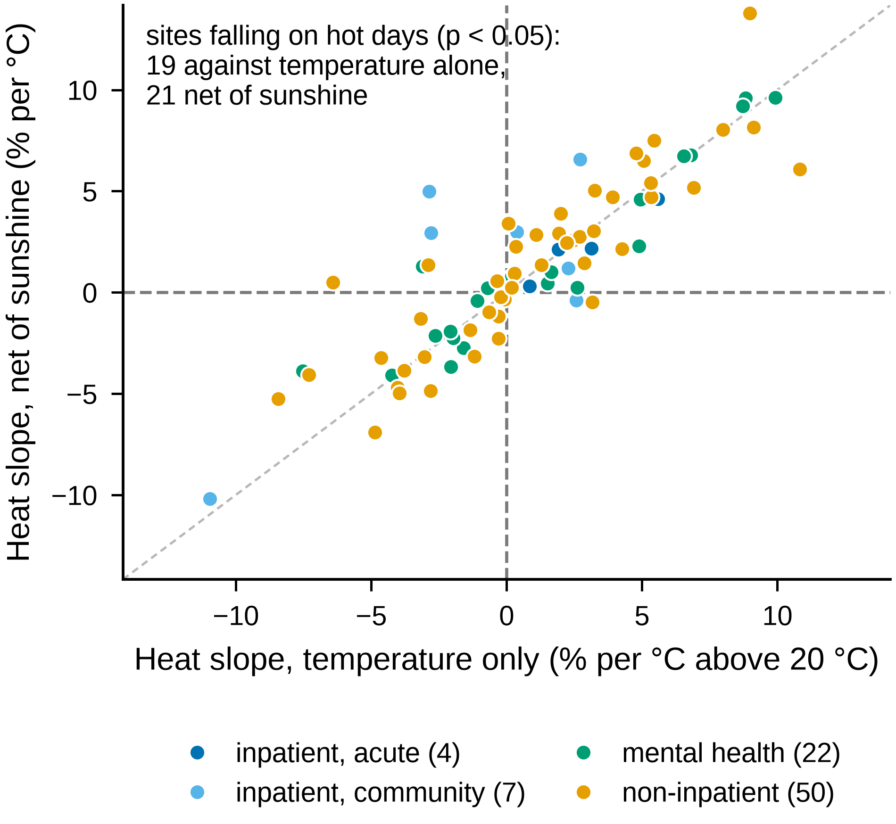
heat_sunshine_control PDF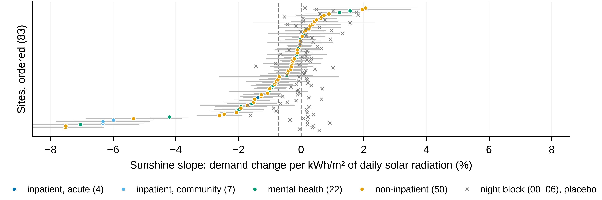
sunshine_slopes PDF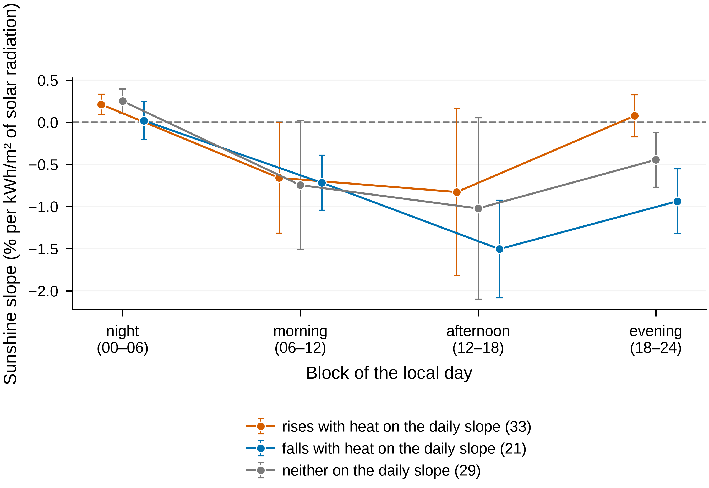
heat_blocks_sunshine PDFHot days are sunny days, and 44 of the 83 sites import significantly less electricity on sunny
days at a given temperature (7 more): the pooled sunshine slope is -0.7 % per kWh/m² of
daily surface solar radiation, about −4 % between an overcast and a clear summer day. The slope has
the shape of daylight: -0.7 % in the morning block, -1.1 % in the afternoon, -0.3 % in the evening
and +0.2 % at night (heat_blocks_sunshine). Sites that report solar generation to ERIC have a
sunshine slope 1.9 points more negative than the rest (p = 0.06), community inpatient sites 3.9
points more negative (p = 0.005). It is daylight-linked lighting across the estate, plus panels
where there are panels.
It is not where the heat dispersion comes from. Adding the sunshine term leaves the pooled heat slope where it was (+1.13 and +1.16 % per °C) and the between-site SD at 3.0–3.1 points; the two heat slopes correlate 0.90, and 21 sites fall significantly with heat net of sunshine (19 before). The heat and sunshine slopes of a site are unrelated (r = 0.05). REPD confirms there is little rooftop PV behind these meters yet: 24 sites have a scheme at their postcode, all 2025 applications awaiting construction, none operational within the sample. (Before the correction of the standard errors, the sunshine control appeared to raise the pooled heat slope from +0.6 to +1.1; that was the old inverse-variance weights, not the data.)
8.2 Time of day and the week (heat_blocks_heat, heat_signature, heat_weekend)
The heat response is an afternoon-and-evening phenomenon: pooled across sites it is +0.3 % per °C at night, +0.9 % in the morning, +2.4 % in the afternoon and +1.6 % in the evening. Among the 33 sites that rise with heat, 16 have an afternoon block slope significantly above their night block: cooling plant that works with the sun. The 21 fallers fall through the whole day, night included (median block slopes −1.8 % at night to −3.5 % in the afternoon), which no sunshine mechanism can produce.
Weekday and weekend heat slopes correlate 0.65; 7 risers have a significantly smaller weekend response (plant that runs with the working day). The median site's weekend response is 1.1 points larger than its weekday one, which is a percentage effect: the same cooling kilowatts against a lower weekend baseline.
8.3 Hot afternoons and warm nights (heat_night_day, heat_group_decomposition)
Splitting the dose into degrees of daily maximum above 24 °C and degrees of daily minimum above 12 °C separates the two populations (group × dose interactions, one regression):
| Sites by the daily heat slope | Hot afternoon (% per °C of T_max > 24) | Warm night (% per °C of T_min > 12) | Sunshine (% per kWh/m²) |
|---|---|---|---|
| rise with heat (33, 73 % of demand) | +1.93 [+1.01, +2.85] | +1.00 [+0.53, +1.47] | −0.66 [−1.39, +0.08] |
| fall with heat (21, 8 % of demand) | −1.32 [−2.03, −0.60] | −1.16 [−1.68, −0.64] | −1.15 [−1.65, −0.64] |
| neither (29) | −0.20 [−0.80, +0.40] | +0.10 [−0.43, +0.63] | −1.63 [−2.67, −0.60] |
| model | sign | term_name | coef_pct | lo_pct | hi_pct | p | sites |
|---|---|---|---|---|---|---|---|
| daily mean | rises with heat | cold (per °C of daily mean below 14 °C) | 1.4 | 0.77 | 2.03 | 0 | 33 |
| daily mean | rises with heat | heat (per °C of daily mean above 20 °C) | 4.71 | 3.1 | 6.32 | 0 | 33 |
| daily mean | rises with heat | sunshine (per kWh/m²) | -0.62 | -1.37 | 0.13 | 0.1 | 33 |
| daily mean | falls with heat | cold (per °C of daily mean below 14 °C) | 0.99 | 0.49 | 1.49 | 0 | 21 |
| daily mean | falls with heat | heat (per °C of daily mean above 20 °C) | -2.96 | -4.29 | -1.64 | 0 | 21 |
| daily mean | falls with heat | sunshine (per kWh/m²) | -1.18 | -1.69 | -0.67 | 0 | 21 |
| daily mean | neither | cold (per °C of daily mean below 14 °C) | 0.66 | 0.19 | 1.13 | 0.01 | 29 |
| daily mean | neither | heat (per °C of daily mean above 20 °C) | 0.49 | -0.48 | 1.47 | 0.32 | 29 |
| daily mean | neither | sunshine (per kWh/m²) | -1.7 | -2.74 | -0.66 | 0 | 29 |
| night and day | rises with heat | cold (per °C of daily mean below 14 °C) | 1.43 | 0.81 | 2.05 | 0 | 33 |
| night and day | rises with heat | hot afternoon (per °C of daily maximum above 24 °C) | 1.93 | 1.01 | 2.85 | 0 | 33 |
| night and day | rises with heat | warm night (per °C of daily minimum above 12 °C) | 1 | 0.53 | 1.47 | 0 | 33 |
| night and day | rises with heat | sunshine (per kWh/m²) | -0.66 | -1.39 | 0.08 | 0.08 | 33 |
| night and day | falls with heat | cold (per °C of daily mean below 14 °C) | 0.95 | 0.45 | 1.45 | 0 | 21 |
| night and day | falls with heat | hot afternoon (per °C of daily maximum above 24 °C) | -1.32 | -2.03 | -0.6 | 0 | 21 |
| night and day | falls with heat | warm night (per °C of daily minimum above 12 °C) | -1.16 | -1.68 | -0.64 | 0 | 21 |
| night and day | falls with heat | sunshine (per kWh/m²) | -1.15 | -1.65 | -0.64 | 0 | 21 |
| night and day | neither | cold (per °C of daily mean below 14 °C) | 0.66 | 0.2 | 1.12 | 0.01 | 29 |
| night and day | neither | hot afternoon (per °C of daily maximum above 24 °C) | -0.2 | -0.8 | 0.4 | 0.5 | 29 |
| night and day | neither | warm night (per °C of daily minimum above 12 °C) | 0.1 | -0.43 | 0.63 | 0.71 | 29 |
| night and day | neither | sunshine (per kWh/m²) | -1.63 | -2.67 | -0.6 | 0 | 29 |
source: code/reports/heat_drivers/group_decomposition.csv (21 rows shown)
Risers respond twice as much to hot afternoons as to warm nights: cooling. Fallers respond to
both, and as much to the night minimum as to the afternoon maximum: 14 of the 21 have a
significantly negative warm-night slope (heating_tail flag). That is the signature of
heating that is still running in the warm season and switches off when the night is warm:
electric heating and the auxiliaries of gas heating in small buildings (the fallers' median
demand is 10 kW against 28 kW for risers), plus water heating that follows mains-water
temperature. The extreme cases say the same: Kelling Hospital runs 50 kW in winter and 19 kW in
summer, Malton 43 kW in April and 30 kW in July, and South Devon's renal unit (dialysis water
heated to 37 °C) falls 16 % per °C. "Falls with heat" is a heating-season tail, not a cooling
behaviour, and it carries 8 % of the demand in the sample.
8.4 Moderators and how much they explain (heat_moderators_categorical, heat_moderators_continuous, heat_variance_explained)
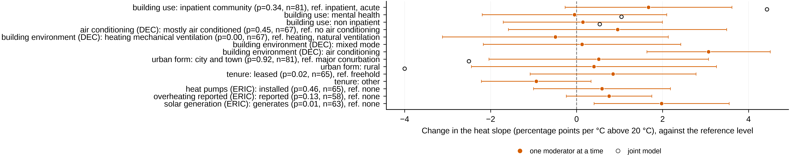
heat_moderators_categorical PDF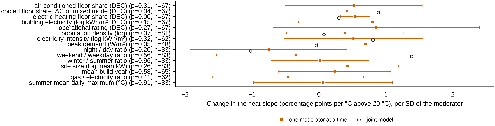
heat_moderators_continuous PDF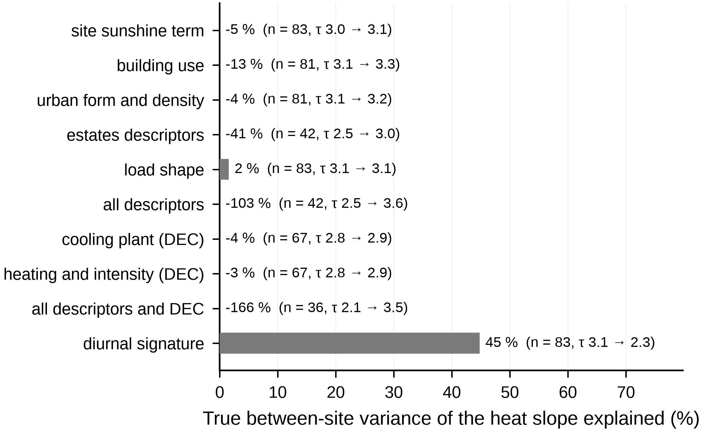
heat_variance_explained PDFWith cold, heat and sunshine each interacted with the moderator (sunshine so that a daylight effect cannot masquerade as a heat moderator), one at a time:
- Nothing in location. Urban form (major conurbation / city and town / rural; joint p = 0.92) and the LSOA population density (p = 0.38) do not move the heat slope: the urban heat island does not show up in the response, consistent with the thermometer result of section 6.
- Nothing in use, age or heating fuel. Building use (p = 0.35), build year, gas-to-electricity ratio, LED share, heat pumps, winter/summer ratio, size: none.
- What moves it, weakly, is how electrically intensive the estate is. Peak demand per m² (+0.7 points per SD, p = 0.06 alone), tenure (joint p = 0.02: leased sites +0.9, PFI/LIFT/other −0.9) and solar generation in ERIC (+2.0 points, p = 0.01), which reads as a marker of trusts that invest in their plant. Overheating reports in clinical areas go with a larger heat slope (+0.8, p = 0.13): sites that overheat respond, presumably with portable and retrofitted cooling.
| set | sites | parameters | tau_before_pct | tau_after_pct | r2_true |
|---|---|---|---|---|---|
| site sunshine term | 83 | 0 | 3.02 | 3.09 | -0.05 |
| building use | 81 | 3 | 3.07 | 3.27 | -0.13 |
| urban form and density | 81 | 3 | 3.09 | 3.15 | -0.04 |
| estates descriptors | 42 | 10 | 2.52 | 2.99 | -0.41 |
| load shape | 83 | 4 | 3.09 | 3.07 | 0.02 |
| all descriptors | 42 | 20 | 2.52 | 3.59 | -1.03 |
| cooling plant (DEC) | 67 | 2 | 2.83 | 2.89 | -0.04 |
| heating and intensity (DEC) | 67 | 2 | 2.83 | 2.88 | -0.03 |
| all descriptors and DEC | 36 | 24 | 2.14 | 3.49 | -1.66 |
| diurnal signature | 83 | 2 | 3.09 | 2.3 | 0.45 |
source: code/reports/heat_drivers/variance_explained.csv (10 rows shown)
- How much is explained. A random-effects meta-regression of the sunshine-controlled site slopes on each descriptor set gives the share of the true between-site variance it accounts for: building use, urban form and density, the estates descriptors, the load shape, the DEC fields and all of them together each explain nothing (negative shares mean the parameters cost more than they explain). The site's own diurnal signature (afternoon excess and sunshine slope) explains 45 %. The heat slope is about plant on the site, which shows in the shape of the day and not in anything the estates return records.
8.5 Types (heat_signature, map_heat_types)
By significance at 5 %: 19 sites rise with heat and nothing else (48 % of demand), 14 rise with heat and fall with sunshine (25 %), 16 fall with sunshine only (9 %), 21 fall with heat (8 %), 13 neither (10 %). Three quarters of the metered demand sits on sites whose electricity rises on hot afternoons. The map shows the types mixed within regions and ICBs: the type is a property of the building, not of the place.
8.6 What this changes
- The cooling response of the estate: +1.2 % per °C of daily mean above 20 °C net of daylight, +1.9 % per °C of daily maximum above 24 °C at the sites that have cooling, and concentrated in the afternoon and evening.
- "Sites that fall on hot days" are small, heating-dominated buildings in their shoulder season, with 8 % of the demand; they should not be modelled as cooling anomalies.
- Sunshine deserves a place in the day-ahead feature set in its own right: -0.7 % per kWh/m² is a daily swing of several percent, separate from temperature.
- The direct data on cooling plant is the Display Energy Certificate register; section 8.7 reads it. It confirms the direction (the sites whose buildings are classed as air-conditioned have the largest heat slopes) but records presence rather than size, so the diurnal signature stays the better measure of plant.
8.7 What the certificates say (heat_dec_aircon, heat_dec_heating, dec_recommendations)
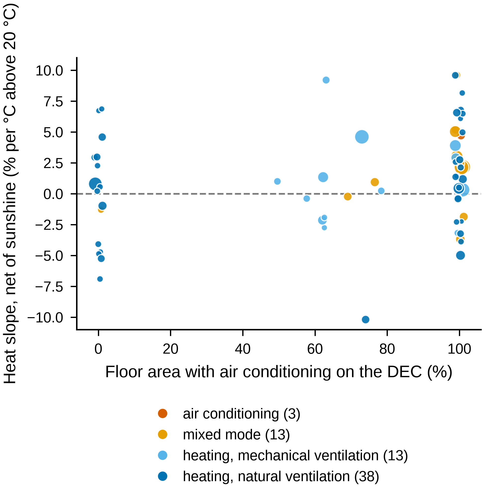
heat_dec_aircon PDF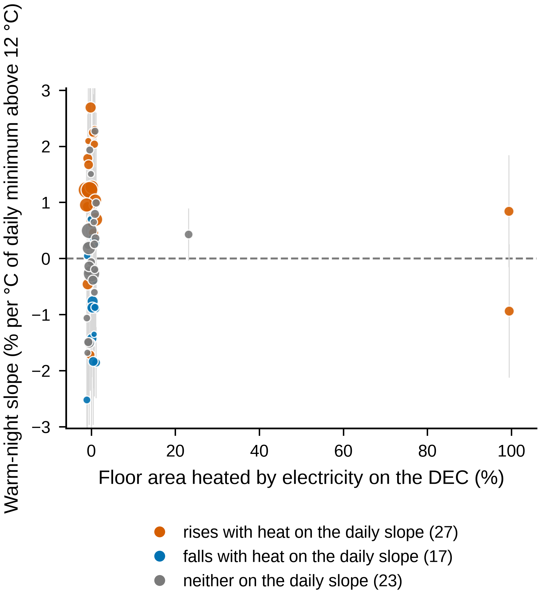
heat_dec_heating PDF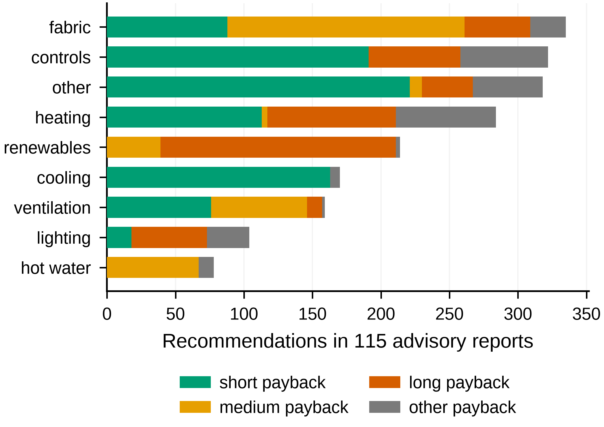
dec_recommendations PDFWith the MHCLG energy-performance API (data/dec.py, sense-energy build-dec; bearer token in
.env) every Display Energy Certificate at the site postcodes was pulled: 3,266 certificates since
2008, 285 buildings with a certificate from 2019 on, at 187 of the 275 postcodes; 67 of the 83 sites
of this section have one, and the certified floor area matches the ERIC gross internal area at the
median (ratio 1.08; a shared postcode can bring in neighbours, dec_coverage flags it). Each
certificate names the building environment, whether air conditioning is present, the main heating
fuel, the metered electricity and fuel of the assessment year and the operational rating; the
newer ones link an advisory report with the assessor's recommendations.
- "Air conditioning present" is almost universal and separates nothing. The question covers any system, server rooms included: 51 of the 67 sites are "mostly air-conditioned" by floor area and 16 have none. The heat slope of the two groups differs by 1.0 point (p = 0.46; medians 1.4 against 0.4 % per °C), and the air-conditioned and cooled floor shares together explain none of the true between-site variance.
- The building environment does separate, at the top. The dominant class is heating with natural ventilation at 38 sites, mechanical ventilation at 13, mixed mode at 13 and air conditioning at 3. Those three sites (34 kW median) have a heat slope 3.1 points above the naturally ventilated reference (p < 0.001; median 4.7 % per °C against 1.0); mixed mode sits at 2.1 and mechanical ventilation at 0.3. In the joint model the cooled floor share (air conditioning or mixed mode) adds 0.9 points per SD (p = 0.02, 38 sites). The register classes most hospital buildings as heated and naturally ventilated while their demand rises on hot afternoons: the plant that does it is below the threshold of "building environment", and its size (the AC kW rating) is recorded on 19 % of recent certificates only.
- The fallers are gas-heated on paper. Electricity is the main heating fuel of some floor area at 4 of 67 sites; the warm-night slope correlates −0.28 with that share, in the expected direction, but the fallers' certificates name gas. Their warm-night fall is the auxiliaries and hot water of gas heating and electric spot heating, not electric space heating as the main system.
- The non-domestic EPCs do not pool with the DECs. The same API gives 1,581 EPCs at the site
postcodes (
sense-energy build-epc,epc_sites.parquet), which would cover 8 of the 16 sites without a DEC. Their building-environment field is a design classification from the SBEM assessment: 34 % of EPCs at these postcodes are "Air Conditioning" against 1 % of DECs, and filling the eight sites from EPCs flips the environment result (joint p from < 0.001 to 0.86). The EPC fields are kept as a separate table, not as moderators. - The recommendations are the "opportunities". 115 advisory reports linked to the current
certificates carry 1,552 recommendations: fabric 335, controls 322, heating 284, renewables 214,
cooling 170 (163 of them short payback: review the air-conditioning strategy, stop heating and
cooling running together, weather-compensated controls), ventilation 159, lighting 104, hot water
78 (
dec_recommendations). They are stored per site as counts and building shares by theme (rec_*indec_sites.parquet) and are available as features or clustering inputs; 27 of the 83 sites here have a report, too few for a moderator yet.
8.8 Causal machine learning on the heat response (cate_vs_slope_observables, cate_vs_slope_signature, cate_importance)
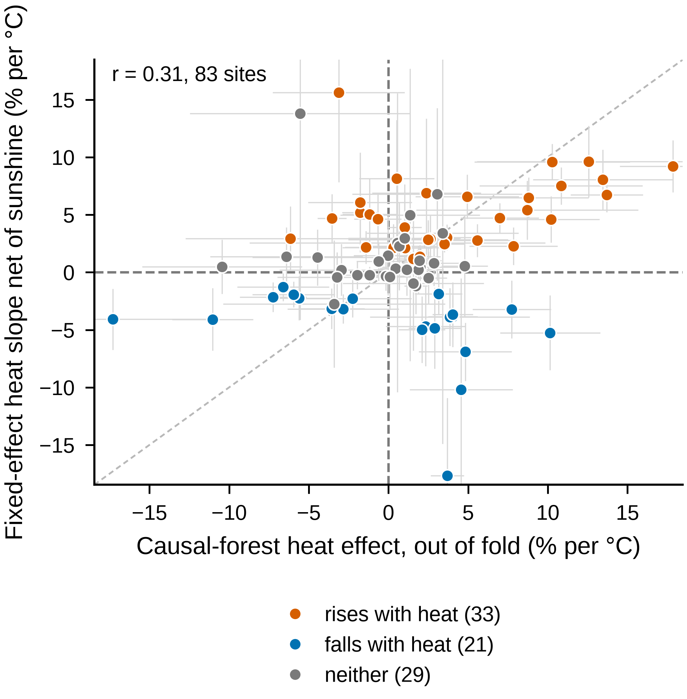
cate_vs_slope_observables PDF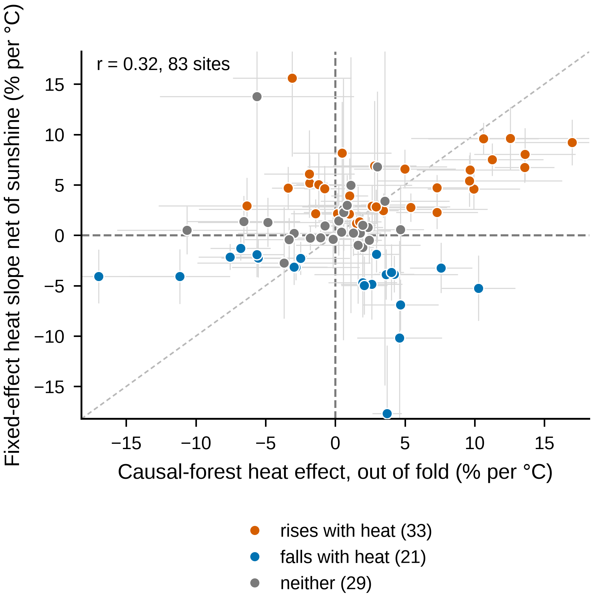
cate_vs_slope_signature PDF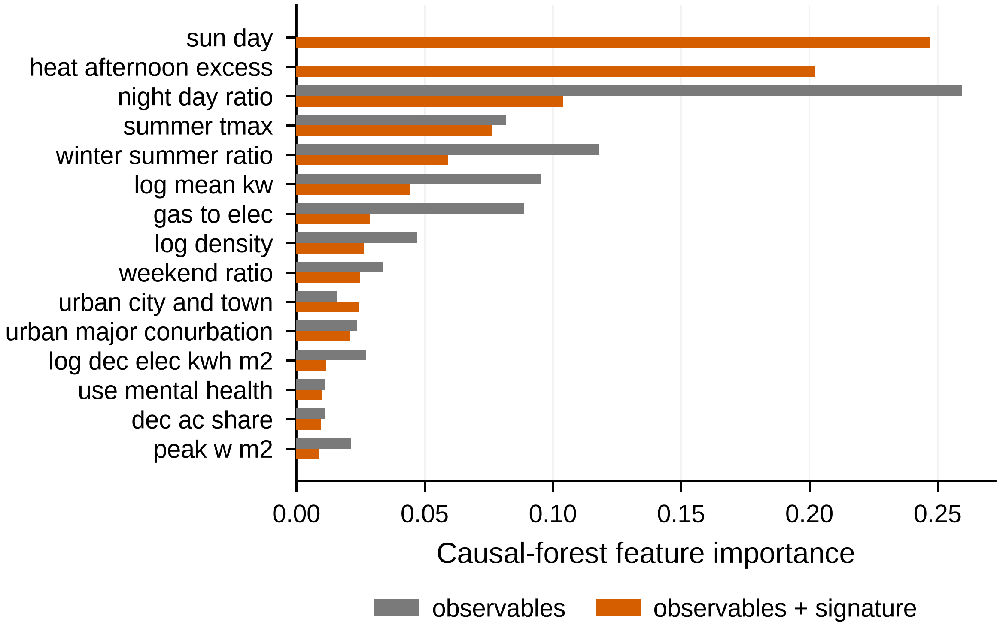
cate_importance PDFsense-energy heat-causal-ml (analysis/heat_causal_ml.py, tables in code/reports/heat_causal_ml/).
The same panel (83 sites, 99,181 site-days) is put to two orthogonal learners. Log demand,
the heat dose and the controls (cold dose, sunshine) are demeaned on specification B's fixed
effects by alternating projections and the controls partialled out, so the learners see only the
within-site, within-month, within-day variation the regressions used. An R-learner (LightGBM on
the residual ratio, weighted by the squared residual dose) and an econml causal forest (ridge
nuisance models, honest trees) are cross-fitted over five site folds, so every site's effect comes
from a model that never saw it. Covariates: the estates, context and DEC descriptors of section 8.4
plus three calendar modifiers (weekend, bank holiday, school summer); a second run adds the site's
diurnal signature. A placebo shuffles the site covariates across sites.
- The forest recovers two fifths of the heterogeneity from observables; the linear moderators recovered none. Out of fold, the forest's site effects correlate 0.31 with the fixed-effect slopes and recover 40 % of their true between-site variance (calibration slope 0.25: the learned effects are spread 6.5 points against a true 3.1, so they are over-dispersed and should be shrunk before use). The R-learner with observables alone finds nothing (−0.08); with the signature it reaches 0.24 and 13 %. The placebo sits at −0.04 and 0 %. (Before the correction of the site standard errors the forest's share read 24 %: the old errors overstated the true spread, 4.2 points, which the forest was then measured against.)
- What the forest splits on is the load shape and the climate, not the estates fields: the night/day ratio (0.26 of importance), the winter/summer ratio, size, the gas ratio and the summer maximum; with the signature in, the daytime sunshine slope takes 0.25 and the afternoon excess 0.20. Of the DEC fields only the electricity intensity enters the top eight, at 0.03.
- The calendar does not modify the heat response. With site x weekday effects already in, the forest's effect is 1.70 % per °C on weekdays and 1.82 at weekends, and identical on bank holidays and in the school summer holiday. The weekend difference of section 8.2 is a percentage effect on a lower baseline, not a different response.
- Who the forest gets right. 35 sites have a learned effect significantly above zero and 15 below. The risers are recovered in rank (correlation 0.45 among them) though shrunk towards the mean (median +2.6 % against +4.7 % in the regressions); the fallers are not: the forest places them at the panel average (median +2.3 % against −3.9 %), because their heating tail has no observable to split on.
The mean learned effect is 1.73 % per °C, an unweighted site-day average against
the regression's pooled +1.2; the difference is the weighting. Next in this thread: shrink the
forest effects (empirical Bayes against the fixed-effect slopes), and use the dated ERIC changes
(section 7 of estates_analysis.md) as staggered treatments for installation effects.
9. Does any of this reach the day-ahead forecasts? (forecast_heat_days)
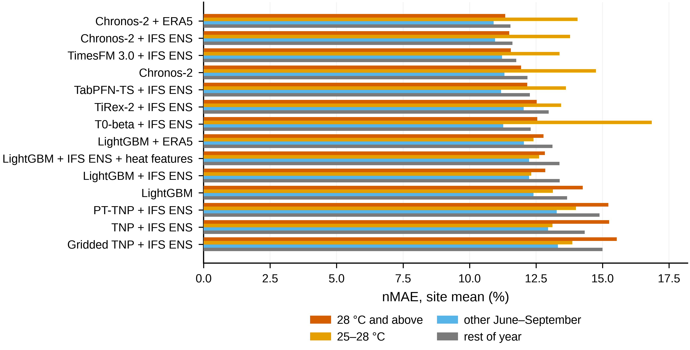
forecast_heat_days PDFanalysis/forecast_heat_days.py scores every model's test-window forecasts (June 2025 to May 2026)
by the kind of target day: ERA5 daily maximum at or above 28 °C (214 site-days), 25–28 °C
(235), other June–September days (1816), daily mean at or below 2 °C (73) and
the rest (3917); nMAE per site as in the main experiment, then the site mean.
| Model | 28 °C and above | 25–28 °C | other summer | at or below 2 °C | rest of year |
|---|---|---|---|---|---|
| LightGBM + IFS | 12.8 | 12.3 | 12.2 | 16.0 | 13.4 |
| LightGBM + ERA5 (perfect weather) | 12.8 | 12.4 | 12.0 | 15.5 | 13.1 |
| LightGBM, no weather | 14.3 | 13.1 | 12.4 | 16.2 | 13.7 |
| Chronos-2 + IFS | 11.5 | 13.8 | 11.0 | 14.2 | 11.6 |
| TimesFM-3 + IFS | 11.6 | 13.4 | 11.2 | 15.9 | 11.8 |
| TabPFN-TS + IFS | 12.2 | 13.6 | 11.2 | 19.9 | 12.3 |
interactive; source: code/reports/forecast_heat_days/scores_by_day_class.csv
- Hot days are harder, by about half a point. Every model errs more on 28 °C+ days than on other summer days; the cold days (at or below 2 °C) are harder still, by three to four points.
- It is not the weather forecast. LightGBM with realised ERA5 weather does no better on the hottest days than with the IFS forecast (12.8 against 12.8), and without weather at all it loses 1.4 points. The gap is in how the models use heat, which is why the heat work prescribes the features: daily maximum and evening temperature rather than the hourly series, the station correction of the hottest days, the day's solar radiation, and the calendar (school summer holiday, Christmas, distance to a bank holiday) which the baseline set carried only as weekday and bank-holiday flags.
The heat features do not move the hot days (lightgbm_ifs_heat). A LightGBM variant with
the prescribed features (the IFS day's forecast maximum, minimum and evening temperature, the
station-corrected maximum and hot-day flags at 25 and 28 °C, degree terms, the day's solar
radiation, and the extended calendar: school summer holiday, Christmas period, next-day holiday,
days to and since a bank holiday) scores 12.83 % nMAE on 28 °C+ days against
12.85 for the baseline IFS variant, 12.61 against 12.32 on 25–28 °C days,
15.49 against 16.02 on the coldest days and 13.06 against 13.06
over the whole test window. The cold days gain half a point (the calendar), the hot days nothing.
Site identity, the recent level and the lag features carry the model; the hot-day penalty is in
what no day-ahead feature carries, the day's plant switching, and the foundation models' lead on
hot days (Chronos-2 11.5) comes from their shape modelling, not from
weather. The honest reading: the response work explains demand on hot days after the fact better
than it helps predict it the day before.
8.9 A learned site embedding (jepa_probe, jepa_map, jepa_surprise)
sense-energy train-jepa and sense-energy jepa-probe (experiments/jepa.py,
analysis/jepa_probe.py, outputs in code/reports/jepa/). A joint-embedding predictive
architecture was trained on the half-hourly panel: 28-day windows of one site's demand, one
token per day (48 half-hours scaled by the site's trailing month, weekday, season), seven target
days per window whose embeddings under a slowly moving target encoder the predictor must produce
from the other 21; 0.48 million parameters, 4,000 steps on 131 sites, 131,656 days
embedded. The test was pre-registered: does the site's embedding predict its fixed-effect heat
slope out of fold better than the diurnal signature (46 %; 45 % with the corrected standard
errors)? Alongside it the same probe ran on
the Chronos-2 encoder's embedding of each site's demand (the foundation-model teacher), on the
observable descriptors and on the signature, with a ridge probe and with TabPFN.
Table: 72 rows
| target_name | representation | model | sites | dims | r2_oof | share_true_variance |
|---|---|---|---|---|---|---|
| heat slope net of sunshine | observables | ridge | 83 | 47 | -0.07 | -0.05 |
| heat slope net of sunshine | observables | tabpfn | 83 | 47 | -0.04 | -0.01 |
| heat slope net of sunshine | diurnal signature | ridge | 83 | 2 | 0.16 | 0.3 |
| heat slope net of sunshine | diurnal signature | tabpfn | 83 | 2 | 0.26 | 0.5 |
| heat slope net of sunshine | observables + signature | ridge | 83 | 49 | -0.03 | 0.04 |
| heat slope net of sunshine | observables + signature | tabpfn | 83 | 49 | 0.03 | 0.07 |
| heat slope net of sunshine | JEPA | ridge | 83 | 96 | -0.03 | 0.04 |
| heat slope net of sunshine | JEPA | tabpfn | 83 | 96 | 0.1 | 0.05 |
| heat slope net of sunshine | JEPA (June–September) | ridge | 83 | 96 | 0.14 | 0.01 |
| heat slope net of sunshine | JEPA (June–September) | tabpfn | 83 | 96 | 0.1 | 0.14 |
| heat slope net of sunshine | JEPA + observables | ridge | 83 | 143 | -0.04 | 0 |
| heat slope net of sunshine | JEPA + observables | tabpfn | 83 | 143 | -0.02 | 0.01 |
| heat slope net of sunshine | JEPA + signature | ridge | 83 | 98 | 0.25 | 0.25 |
| heat slope net of sunshine | JEPA + signature | tabpfn | 83 | 98 | 0.2 | 0.35 |
| heat slope net of sunshine | Chronos-2 | ridge | 83 | 768 | -0.01 | 0 |
| heat slope net of sunshine | Chronos-2 | tabpfn | 83 | 768 | 0 | -0.02 |
| heat slope net of sunshine | JEPA-weather | ridge | 83 | 96 | 0.04 | -0.03 |
| heat slope net of sunshine | JEPA-weather | tabpfn | 83 | 96 | 0 | 0.04 |
| heat slope net of sunshine | JEPA-weather heat response | ridge | 83 | 97 | -0.08 | -0.03 |
| heat slope net of sunshine | JEPA-weather heat response | tabpfn | 83 | 97 | -0.02 | 0.08 |
| heat slope net of sunshine | JEPA-weather sunshine response | ridge | 83 | 97 | 0.12 | 0.02 |
| heat slope net of sunshine | JEPA-weather sunshine response | tabpfn | 83 | 97 | 0.18 | 0.3 |
| heat slope net of sunshine | JEPA-weather responses + signature | ridge | 83 | 99 | 0.14 | 0.35 |
| heat slope net of sunshine | JEPA-weather responses + signature | tabpfn | 83 | 99 | 0.24 | 0.55 |
| cold slope | observables | ridge | 83 | 47 | 0.19 | 0.18 |
| cold slope | observables | tabpfn | 83 | 47 | 0.15 | 0.14 |
| cold slope | diurnal signature | ridge | 83 | 2 | 0.15 | 0.16 |
| cold slope | diurnal signature | tabpfn | 83 | 2 | 0.1 | 0.16 |
| cold slope | observables + signature | ridge | 83 | 49 | 0.22 | 0.23 |
| cold slope | observables + signature | tabpfn | 83 | 49 | 0.16 | 0.18 |
| cold slope | JEPA | ridge | 83 | 96 | -0.02 | 0.01 |
| cold slope | JEPA | tabpfn | 83 | 96 | 0.14 | 0.13 |
| cold slope | JEPA (June–September) | ridge | 83 | 96 | -0.03 | 0 |
| cold slope | JEPA (June–September) | tabpfn | 83 | 96 | -0.06 | -0.02 |
| cold slope | JEPA + observables | ridge | 83 | 143 | 0.15 | 0.17 |
| cold slope | JEPA + observables | tabpfn | 83 | 143 | 0.15 | 0.19 |
| cold slope | JEPA + signature | ridge | 83 | 98 | 0.07 | 0.1 |
| cold slope | JEPA + signature | tabpfn | 83 | 98 | 0.13 | 0.15 |
| cold slope | Chronos-2 | ridge | 83 | 768 | 0.42 | 0.53 |
| cold slope | Chronos-2 | tabpfn | 83 | 768 | 0.39 | 0.53 |
| cold slope | JEPA-weather | ridge | 83 | 96 | -0.16 | 0.04 |
| cold slope | JEPA-weather | tabpfn | 83 | 96 | 0.04 | 0.1 |
| cold slope | JEPA-weather heat response | ridge | 83 | 97 | 0.18 | 0.11 |
| cold slope | JEPA-weather heat response | tabpfn | 83 | 97 | 0.09 | 0.09 |
| cold slope | JEPA-weather sunshine response | ridge | 83 | 97 | 0.2 | 0.23 |
| cold slope | JEPA-weather sunshine response | tabpfn | 83 | 97 | 0.28 | 0.34 |
| cold slope | JEPA-weather responses + signature | ridge | 83 | 99 | 0.21 | 0.17 |
| cold slope | JEPA-weather responses + signature | tabpfn | 83 | 99 | -0.04 | 0.06 |
| sunshine slope | observables | ridge | 83 | 47 | 0.28 | 0.16 |
| sunshine slope | observables | tabpfn | 83 | 47 | 0.42 | 0.28 |
| sunshine slope | diurnal signature | ridge | 83 | 2 | 0.89 | 0.93 |
| sunshine slope | diurnal signature | tabpfn | 83 | 2 | 0.95 | 0.99 |
| sunshine slope | observables + signature | ridge | 83 | 49 | 0.59 | 0.42 |
| sunshine slope | observables + signature | tabpfn | 83 | 49 | 0.62 | 0.6 |
| sunshine slope | JEPA | ridge | 83 | 96 | 0.52 | 0.32 |
| sunshine slope | JEPA | tabpfn | 83 | 96 | 0.46 | 0.35 |
| sunshine slope | JEPA (June–September) | ridge | 83 | 96 | 0.55 | 0.46 |
| sunshine slope | JEPA (June–September) | tabpfn | 83 | 96 | 0.46 | 0.38 |
| sunshine slope | JEPA + observables | ridge | 83 | 143 | 0.6 | 0.45 |
| sunshine slope | JEPA + observables | tabpfn | 83 | 143 | 0.57 | 0.49 |
| sunshine slope | JEPA + signature | ridge | 83 | 98 | 0.9 | 0.91 |
| sunshine slope | JEPA + signature | tabpfn | 83 | 98 | 0.94 | 0.93 |
| sunshine slope | Chronos-2 | ridge | 83 | 768 | 0.64 | 0.54 |
| sunshine slope | Chronos-2 | tabpfn | 83 | 768 | 0.69 | 0.66 |
| sunshine slope | JEPA-weather | ridge | 83 | 96 | 0.47 | 0.49 |
| sunshine slope | JEPA-weather | tabpfn | 83 | 96 | 0.24 | 0.48 |
| sunshine slope | JEPA-weather heat response | ridge | 83 | 97 | 0.65 | 0.53 |
| sunshine slope | JEPA-weather heat response | tabpfn | 83 | 97 | 0.7 | 0.65 |
| sunshine slope | JEPA-weather sunshine response | ridge | 83 | 97 | 0.64 | 0.54 |
| sunshine slope | JEPA-weather sunshine response | tabpfn | 83 | 97 | 0.63 | 0.62 |
| sunshine slope | JEPA-weather responses + signature | ridge | 83 | 99 | 0.87 | 0.86 |
| sunshine slope | JEPA-weather responses + signature | tabpfn | 83 | 99 | 0.87 | 0.85 |
source: code/reports/jepa/probe.csv (72 rows shown)
- No, on the heat slope. The JEPA embedding recovers 4 % of the true between-site heat variance (1 % from June–September days only; 5 % and 14 % with TabPFN), the Chronos-2 embedding 0 %, the observables nothing (−5 %), the diurnal signature 30 % (ridge) and 50 % (TabPFN). (Shares recomputed on 9 November against slopes with Driscoll–Kraay standard errors.) Adding the embedding to the signature adds nothing. By the criterion set in advance, the thread stops here.
- Yes, on the responses that show in the day's shape. The same embeddings carry the sunshine slope well (Chronos-2 54 %, JEPA 32 %; 66 % and 35 % with TabPFN) and Chronos-2 carries the cold slope (53 %) where the observables manage 18 %. Daylight-linked lighting and electric heating leave a mark on the profile that a weather-blind representation picks up; an afternoon cooling response does not, because it is conditional on a driver the model never sees. (The signature's 93 % on sunshine is circular: the daytime sunshine slope is one of its two components.)
- The embeddings encode operation, not category. Building use is classified at 66 % by the JEPA embedding and 53 % by Chronos-2 against a 62 % majority class; the DEC environment at 51 % against 59 %. k-means on the JEPA embedding agrees moderately with the demand-shape clusters (adjusted Rand 0.28) and, like them, explains none of the heat slope.
- The surprise score is the usable by-product. The latent prediction error of a day held out
of its window spikes at the CHP hospitals exactly where the changepoint search put steps and
stays flat at small sites (
jepa_surprise): a learned regime detector that needs no penalty tuning, for the meter-gap and plant-switching flags.
The weather-conditioned version (train-jepa --weather, code/reports/jepa_weather/) gives
the day tokens and the predictor's target tokens the day's temperature, sunshine, wind and rain,
and turns the predictor into a counterfactual machine: the same context, a target day 5 °C
warmer, a different predicted embedding. The mean change per site is a learned response
vector (response_embeddings; the same for +2 kWh/m² of sunshine). With the batch pipeline on
the GPU the model trains in three minutes instead of 75. The probe, repeated:
- Still no on the heat slope. The weather-conditioned embedding recovers none of the
true heat variance (−3 %; 4 % with TabPFN), the heat response vector none (−3 %; 8 % with
TabPFN). The sunshine response vector reaches 31 % with TabPFN and 3 % with ridge: one probe,
not a stable signal, and below the signature's 50 %. The latent response to a warmer day has
almost the same size at every site (
jepa_response): the predictor learned the panel's average weather-to-profile mapping, not each site's. - Yes on the cold and sunshine responses. The sunshine response vector recovers 23 % of the cold slope (34 % with TabPFN), against 18 % from the observables and 1 % from the weather-blind JEPA; the heat response vector recovers 53 % of the sunshine slope (65 % with TabPFN), level with Chronos-2. Which vector carries the cold slope moved with the correction of the standard errors (before it the heat vector did, at 22–33 %): the two are readings of one learned weather sensitivity, not separate responses. Conditioning on weather did put responses into the embedding, the large and frequent ones: heating runs on a third of days and moves demand by tens of per cent, hot afternoons on three per cent of days and by a few per cent. A loss that weights every day equally cannot see the second.
Two things follow. The site-level heat response is, for representation learning, a rare-event signal: a model that should carry it needs a warm-season objective (windows and targets drawn from June–September, hot days up-weighted) or an explicit target, which is what the regressions are. And the pre-registered criterion stands: the thread stops here for the heat question. The response vectors are kept as covariates for the cold and sunshine work.
8.10 The LaT-PFN route (latent_pfn)
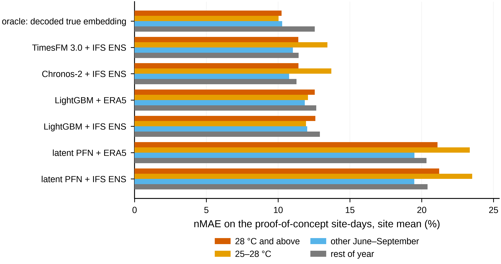
latent_pfn PDFsense-energy train-latent-pfn (experiments/latent_pfn.py, outputs in code/reports/latent_pfn/).
Two small models on the weather-conditioned JEPA: a decoder from a day's embedding back to its 48
half-hours (scaled by the site's trailing month), and a latent PFN, an in-context transformer that
takes a context set of one site's days (embedding, weather, calendar, days before the query) and
predicts the embeddings of query days given only their weather and calendar and the last context
day's embedding; trained across all sites on tasks before June 2025, so at forecast time it adapts
to a site from its own 42 most recent days without fitting. Scored day ahead on the
proof-of-concept's site-days (test window June 2025 to May 2026, 91 sites) next to the existing
models on the same site-days, with realised ERA5 weather and with the 00z IFS ENS run of the day
before aggregated to the same daily variables.
Table: 35 rows
| variant | day_class | sites | site_days | nmae |
|---|---|---|---|---|
| latent PFN + ERA5 | 25–28 °C | 85 | 223.562 | 0.233 |
| latent PFN + ERA5 | 28 °C and above | 64 | 211.792 | 0.211 |
| latent PFN + ERA5 | at or below 2 °C | 73 | 73 | 0.245 |
| latent PFN + ERA5 | other June–September | 91 | 1802.042 | 0.195 |
| latent PFN + ERA5 | rest of year | 91 | 3871.021 | 0.203 |
| latent PFN + IFS ENS | 25–28 °C | 85 | 223.562 | 0.235 |
| latent PFN + IFS ENS | 28 °C and above | 64 | 211.792 | 0.212 |
| latent PFN + IFS ENS | at or below 2 °C | 73 | 73 | 0.242 |
| latent PFN + IFS ENS | other June–September | 91 | 1802.042 | 0.195 |
| latent PFN + IFS ENS | rest of year | 91 | 3871.021 | 0.204 |
| oracle: decoded true embedding | 25–28 °C | 85 | 223.562 | 0.1 |
| oracle: decoded true embedding | 28 °C and above | 64 | 211.792 | 0.102 |
| oracle: decoded true embedding | at or below 2 °C | 73 | 73 | 0.085 |
| oracle: decoded true embedding | other June–September | 91 | 1802.042 | 0.103 |
| oracle: decoded true embedding | rest of year | 91 | 3871.021 | 0.125 |
| chronos2_ifs | 25–28 °C | 85 | 223.562 | 0.137 |
| chronos2_ifs | 28 °C and above | 64 | 211.792 | 0.114 |
| chronos2_ifs | at or below 2 °C | 73 | 73 | 0.139 |
| chronos2_ifs | other June–September | 91 | 1802.042 | 0.108 |
| chronos2_ifs | rest of year | 91 | 3871.021 | 0.113 |
| lightgbm_era5 | 25–28 °C | 85 | 223.562 | 0.121 |
| lightgbm_era5 | 28 °C and above | 64 | 211.792 | 0.126 |
| lightgbm_era5 | at or below 2 °C | 73 | 73 | 0.151 |
| lightgbm_era5 | other June–September | 91 | 1802.042 | 0.119 |
| lightgbm_era5 | rest of year | 91 | 3871.021 | 0.127 |
| lightgbm_ifs | 25–28 °C | 85 | 223.562 | 0.119 |
| lightgbm_ifs | 28 °C and above | 64 | 211.792 | 0.126 |
| lightgbm_ifs | at or below 2 °C | 73 | 73 | 0.157 |
| lightgbm_ifs | other June–September | 91 | 1802.042 | 0.12 |
| lightgbm_ifs | rest of year | 91 | 3871.021 | 0.129 |
| timesfm3_ifs | 25–28 °C | 85 | 223.562 | 0.134 |
| timesfm3_ifs | 28 °C and above | 64 | 211.792 | 0.114 |
| timesfm3_ifs | at or below 2 °C | 73 | 73 | 0.157 |
| timesfm3_ifs | other June–September | 91 | 1802.042 | 0.11 |
| timesfm3_ifs | rest of year | 91 | 3871.021 | 0.114 |
source: code/reports/latent_pfn/scores_by_day_class.csv (35 rows shown)
- The latent space can express the day. Decoding the day's true embedding gives 11.7 % nMAE over the window and 10.2 % on days at or above 28 °C, below Chronos-2 with forecast weather (11.4 %) on those days. The ceiling is high.
- The in-context predictor does not reach it. The latent PFN scores 20.3 % with realised weather and 20.3 % with the IFS forecast: the same, so the query's weather barely enters its prediction, and worse than seasonal naive. Giving the context tokens their distance in days from the query, and the query the last context day's embedding, did not change it. The predictor converges to the site's average day in latent space; the information that makes a day differ from the average (its own recent level and shape, which the day-ahead models take from the last 24 hours as lags) is not in a weather-and-calendar query.
- Stop here. As a forecasting route the latent PFN, as built, loses to every existing model by eight points. What would be needed is a decoder-free formulation that predicts the next day's embedding from the previous days' embeddings autoregressively (a latent forecaster rather than a weather regressor), which is what the TNPs and foundation models already do in value space; the latent space adds nothing to that until the embedding itself carries more than the profile.